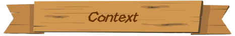
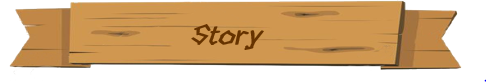
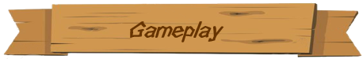
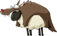
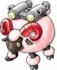
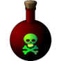

In the following video, each action is triggered in reaction to a player's touch on the screen.
A game developed in collaboration with Quentin Loizeau.

This game was created for the tactile table of the Institut Image. Located in the entrance of the building, it's a fun way to welcome visitors and give them a first glimpse of the technology developed onsite.
Visitors trying the tactile table
The game was developed with Unity in c# and is optimized for an HD 1920*1080 display.
The project was sequenced in 3 canvases: one for the background and sheep, one for the special actions and one for the menu. One of the objectives of the project was to handle multi-touching (it can be up to 40 touches at the same time if the 4 players use all their fingers simultaneously).
Sheep gameObjects have Unity colliders and Unity rigidBodies to detect the interaction with other gameObjects.
Each touch instantiates a collider and a rigidBody that will act as a shockwave if in contact with a sheep. The icons for the menu and the special actions have trigger type colliders.
Each barn has a trigger collider that is only affected by the sheep. The score is updated accordingly.

The sun is shinning and the sky is blue. Amid the verdant green pastures alpine flowers burst with life. Usually peaceful, the countryside is now buzzing with excitement. No wonder, today is the first mowing day for the four famers of the valley!
But wait a minute, what are the herds of sheep doing outside? They are supposed to be in their barns!
Without their sheep, how are the farmers going to prepare for the harsh winter? Are you ready to help them?

In this game, the key to success is to gather 100 sheep in one barn. Discover how...
Move the sheep
The herds are just wandering in the pastures, looking for the lushest grass. To bring them back to your barn, the player can push them in the right direction by touching the table. A counter indicates how many sheep are in the barn.
Special actions
To access the special action menu, each player can touch the chubby sheep standing in front of their barn. The player can then trigger an action by touching the corresponding icon and choosing which barn to target. It will cost him/her/them a few points, but it's worth it!

Send a pack of wolves near the barn of one of an oponent. They will eat all the sheep on their way.
Cost: 10 sheep.
Invoke Mother Nature to make the pasture close to a barn more luxurious than anywhere else in the valley and consequently attract more sheep. Feeling generous? It's possible to generate it next to the barn of one of the other players.
Cost: 15 sheep.

Send an explosive sheep to a barn. This action will lower the score of the targeted barn by 20 sheep.
Cost: 10 sheep.

Play viciously by poisoning the surrounding land of a barn. The herd will avoid the area.